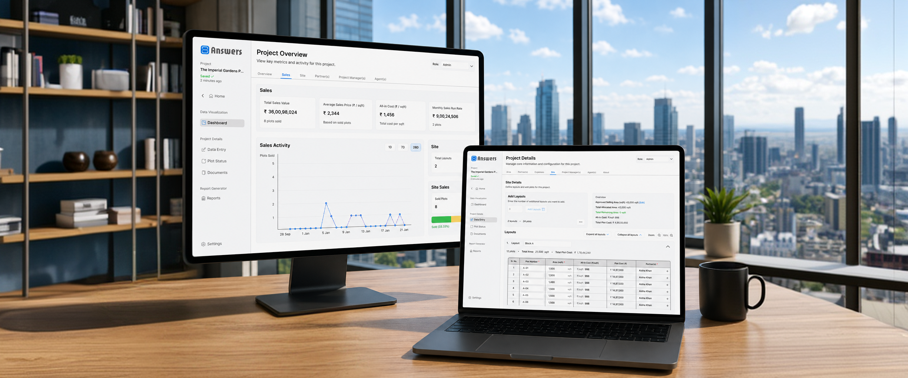
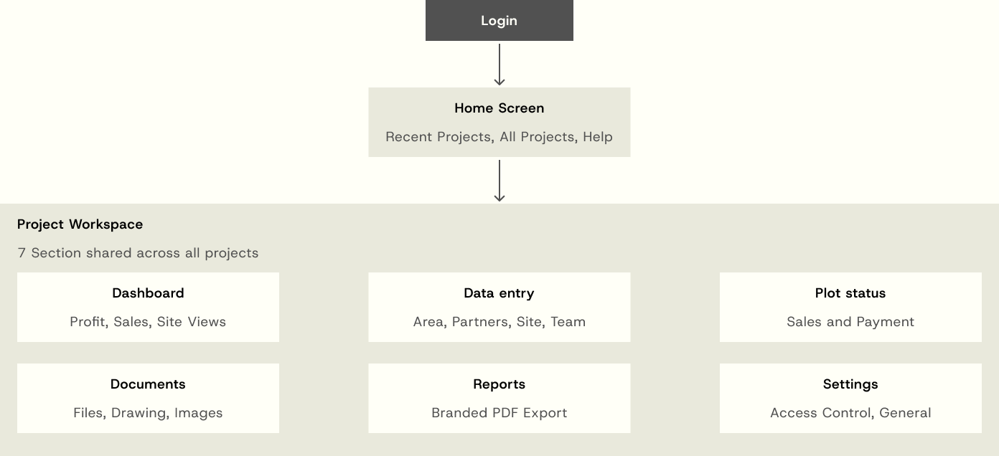
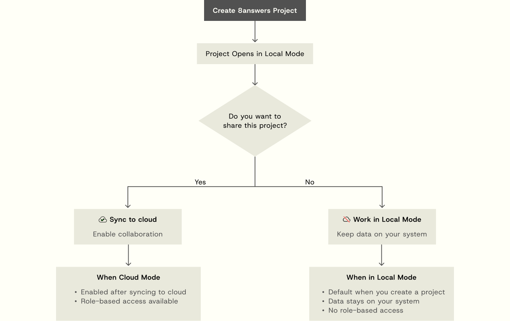

Paper records
Project information was stored in notebooks.

I noticed that many local real estate developers still relied on notebooks, spreadsheets, and WhatsApp to manage their projects.
Important information like plot availability, expenses, partner investments, and sales records were scattered across different places, making it difficult to track projects accurately. As projects became larger, manual calculations and disconnected workflows resulted in duplicated work, inconsistent records, and limited visibility across teams.
Project information was stored in notebooks.
Financial data existed in different spreadsheets.
Updates were scattered across different chats.
Profit, ROI and plot cost were calculated manually.
Approvals and receipts were difficult to locate.
Partners, agents and managers needed different information.
Financial, partner, buyer and project data is sensitive.
Navigation

Role-based access
Offline + online

Users can sign in with Google for instant, password-free access, or create an account directly with email including OTP verification and clear password requirements shown inline as they type. Once inside, they land straight on their projects, with no unnecessary steps between login and getting to work.
The dashboard is built around focused views for overview, sales, site, amenities, area, partners, project managers and agents. Each surface shows only the metrics relevant to that context, updating in real time as data is entered.
Data entry is organised into focused steps: area, partners, expenses, site, team, agents and project details. Building areas through a site model replaces scattered notes and keeps every project record connected.
Every real estate project is built around plots: available, pending or sold, visible instantly across status views. A single edit flow captures plot size, price, payment method and buyer details in one place.
All project files, from drawings and approvals to receipts and CAD files, live in one searchable, role-aware space. Images uploaded during data entry automatically appear here, so nothing has to be re-uploaded or hunted down across scattered folders and chats.
With one click, the platform generates a fully branded PDF report covering financials, sales summaries, partner and agent compensation and expenses. Everything was designed to make sharing transparent, ready-to-share insights as simple as sending a link.
Settings cover project-level controls and access management, from general project settings to role-based permissions for admins, partners, project managers and agents. Access can only be modified once a project is synced to the cloud, ensuring every permission change is tracked and secure.
Complex product design is less about adding features and more about creating a system that makes complexity manageable.
With 8Answers, the biggest challenge was connecting financial data, plot sales, documents, permissions and team collaboration into a workflow that could adapt to four different roles and both local and cloud use cases.
I learned to design not only for the primary task, but also for permissions, edge cases, data ownership and the conditions in which the product is actually used.